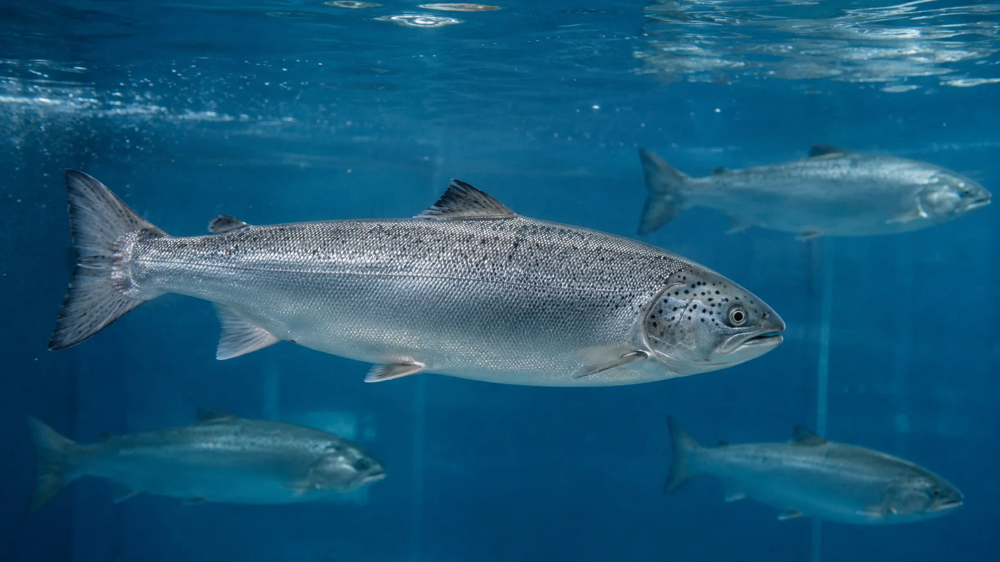
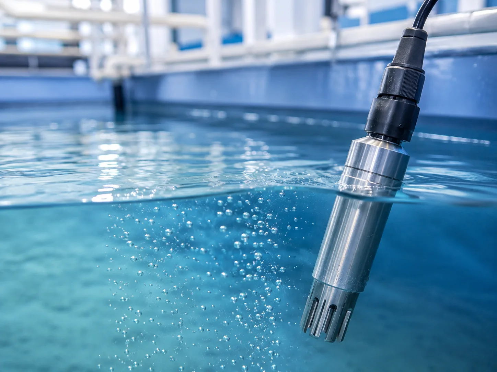

養殖魚を支える、水環境の安定化。
魚種、水温、水量、密度、既存設備により、必要な水処理は変わります。UFB DUALは、既存設備と組み合わせて水質管理を支援します。
LAND-BASED AQUACULTURE
陸上養殖、漁港、活魚水槽、水産加工場へ。UFB水産ラボは、ウルトラファインバブル「UFB DUAL」を海水供給・酸素供給・水質管理・洗浄・配管設計に組み込み、水産施設の水インフラを提案します。
WHY NOW
閉鎖循環式では、ろ過、殺菌、酸素供給、排水処理、配管設計が複雑に関係します。
設備投資や電力コストを抑えながら水質を安定させるには、装置単体ではなく、施設全体の水の流れを見た設計が重要です。
陸上養殖向けページを見るFIELD ISSUES
酸素不足、水質悪化、ヌメリ、臭気、清掃負担、ランニングコストは複合的に発生します。水産・養殖では、魚が触れる水、洗浄に使う水、配管内を流れる水を一体で見る必要があります。

魚種、水温、水量、密度、既存設備により、必要な水処理は変わります。UFB DUALは、既存設備と組み合わせて水質管理を支援します。

UFB DUALは万能装置ではありません。ろ過装置、酸素供給、洗浄ライン、配管施工と組み合わせ、水処理全体を補完します。
ABOUT UFB DUAL
UFB DUALは、水圧を利用してウルトラファインバブルを発生させる配管直結型ノズルです。外部電源を使わず、13Aから50Aまでの標準ラインナップに加え、100Aの大型口径や海水対応仕様など、現場条件に合わせた受注生産にも対応します。
TOKUSHIMA CASE
徳島県阿南市の椿泊漁港に新設された高度衛生管理型荷さばき所では、海水を供給する大元配管にUFB DUAL 100Aの海水対応仕様を設置。活魚水槽や洗浄ラインなどへ、UFBを含む海水を供給する仕組みとして採用されました。
導入事例を見るFLOW
施設種別、魚種、水量、既存設備、現在の課題を確認します。
配管図、ポンプ能力、設置スペース、メンテナンス導線を確認します。
口径、素材、設置位置、ストレーナー、バイパス配管を検討します。
施工範囲、必要部材、設備停止時間、概算費用を整理します。
現場仕様に合わせた部材選定と配管施工を行います。
導入後の水質・清掃状況・運用負荷を確認します。
CONTACT
導入可否や設置位置は、魚種・水量・海水/淡水条件・既存配管により変わります。検討初期でも、わかる範囲で相談できます。図面・水量・ポンプ能力があると初期提案の精度が上がります。
導入相談・資料請求・テスト導入の相談に対応。3営業日以内に担当よりご連絡します。